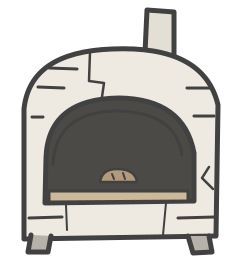
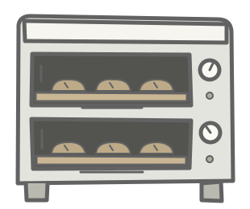

四份工资，都还在。
你的面包店

裁掉两人，压低工资，再用快炉抢客。


先照原来的安排，开一天看看。
这是刻意收紧条件的教学情景，不是“不压工资的企业都会倒闭”的定律。顾客在两店都能买到同样的面包时，先找更便宜的；这里没有品牌差异、额外订单、政府购买、借钱和外部市场。每人每天只试买一个面包，两店争同一批11人，不能凭空增加买家。
你的店原来4人、工资2、售价3，每天做6个；隔壁换了快炉，留下2人、工资1、售价1，每天做12个。快速烤炉需要8金币；隔壁开局已付，玩家更换也要实际付。快炉12个、普通炉每人1.5个是教学参数，不是行业数据。价签的1金币低于你原来的每个面包直接生产成本，但不低于隔壁卖完全部货时的直接单位成本；这里只模拟压价竞争，不作现实倾销认定。
两店原有现金各36、八位工人各6。隔壁购炉8转给合并供货商；另外两位老板初始为0。总计120金币，只在现有账户流转。员工领工资再购物；老板取最多2金币生活费。原料按每4个面包1金币向上取整，剩货每6个1金币保管费，付不起的保管款另记欠账；两天前的面包坏掉。现金不足就不能实际发工资开炉，旧货仍可出售。余额不是净利润。未核算完整设备折旧、遣散费和失业保障。
合并供货商收到设备、原料和保管款，每天也只买一个面包，其余钱存下；这里没有继续模拟供货商雇人、投资或把这些收款花到其他行业。因此这个需求上限包含“其他买家的支出也有限”这一前提，不能只凭产品超过工资就认定必然卖不掉。
先不跟：看成本与客人流向。只降价：看保留工资后的现金压力。工资、人手也跟着压：看谁不再领钱、积蓄如何耗掉。没有钱的人和没有商品可买的人分开记录，不把“没有成交”都说成“没有需求”。可以从任何已玩的一天回放；原路径保存，同一批顾客的偏好不重抽。
这里表现的是竞争压力、收入与购买之间的反馈，不是资本主义基本矛盾的完整证明。基本矛盾指生产社会化与生产资料资本主义私人占有之间的矛盾。库存、降薪、失业是可能的表现。改变劳动保护、分配、产品、需求来源或产权等条件，结果可能改变；社会主义国家不能直接套同一基本矛盾。
人物来自本项目已归档的Nicky Case《We Become What We Behold》，烤炉、面包与厨师帽沿用本项目线稿。此处没有《信任的进化》的对手竞猜、输赢排名、策略图鉴和信任收益矩阵。